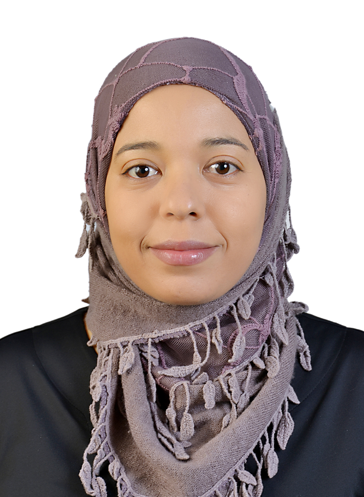

Asma El Kissi PORTFOLIO
Dr. Ing. Asma El Kissi

I am Asma El Kissi, Electrical Engineer. I have a Master and PhD in Electrical Engineering
from National Engineering School of Monastir. I taught at the University of Monastir as a contractual
assistant. I supervised and co-supervised engineering and master trainings. I participated in a federal
research project as a Post Doc. My research concerns biometrics for the development of identity
verification solutions. I have published the results of my research in international publications.
I won the “Best Paper Award” at the 2017 SSD International Multi Conference and the first prize
at the 2017 My Thesis in 180 Sec National Competition. I deepened my hard skills and soft skills
through several training courses, including the «Post-Doc Innovation» program of Promise.
Thanks to my training as an engineer, I have a critical and analytical mind.